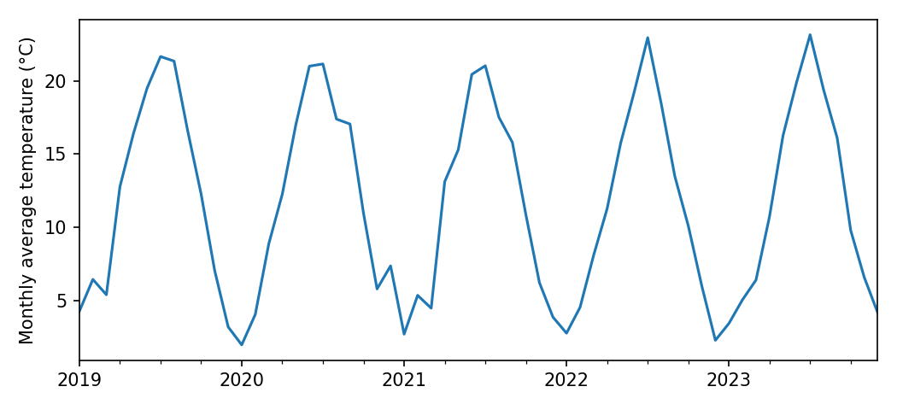
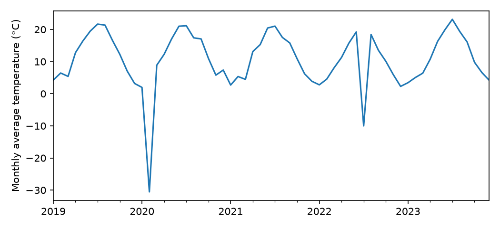

Why Containers Matter
Sharing your notebook and your data is a great start. But a notebook doesn’t run on its own: it runs on top of a software stack, and that stacks is always evolving. In this LilyPad, you’ll see what consequences this can have for scientific reproducibility, and one popular solution to this problem.
1. The inherited notebook
About 5 minutes
It’s fall 2026, and you’ve just joined a lab. Your advisor asks you to extend a project that Alex, a former lab member, started: an analysis of five years (2019–2023) of daily temperatures from the lab’s weather station. Before adding new years, you want to check that you can reproduce Alex’s results.
Alex left you two files. The first is the data, station_daily.csv: one row per day, with the day’s average temperature in °C. On days when the sensor failed, the temperature is recorded as -999:
date,temp_C
2019-01-01,2.3
2019-01-02,3.6
2019-01-03,6.5
...
2020-02-11,-999.0
...Fictional weather station and values, created for The Pond (2026).
The second is a Jupyter notebook, saved in March 2024 with its outputs. It’s written in Python and uses pandas, a widely used package for working with data tables. You don’t need to know Python programming for this exercise: the comments (lines that start with #) say what each step does.
Cell 1
# Load the tools: pandas for tables, matplotlib for plots
import pandas as pd
import matplotlib.pyplot as plt
# Read the data: one row per day
df = pd.read_csv("station_daily.csv", parse_dates=["date"], index_col="date")Cell 2
# Mark the sensor failures (-999) as missing
df["temp_C"][df["temp_C"] == -999] = NoneFutureWarning: ChainedAssignmentError: behaviour will change in pandas 3.0!
You are setting values through chained assignment. Currently this works in certain
cases, but when using Copy-on-Write (which will become the default behaviour in
pandas 3.0) this will never work to update the original DataFrame or Series [...]
Use `df.loc[row_indexer, "col"] = values` instead [...]Cell 3
# Summarize: the average temperature, and the number of days below freezing
print("Average temperature (°C):", round(df["temp_C"].mean(), 2))
print("Frost days, 2019–2023:", (df["temp_C"] < 0).sum())Average temperature (°C): 11.77
Frost days, 2019–2023: 57Cell 4
# Average the days of each month ("M"), then plot
monthly = df["temp_C"].resample("M").mean()
monthly.plot(ylabel="Monthly average temperature (°C)", xlabel="")
plt.show()FutureWarning: 'M' is deprecated and will be removed in a future version,
please use 'ME' instead.
Cells 2 and 4 printed warnings. Like most of us, Alex scrolled past them: the notebook ran, and the results looked fine. Apart from the two files, Alex left no other notes.
Your turn! You’ll run the same notebook, on the same data. What do you expect?
2. The notebook crashes
About 5 minutes
You install Python on your laptop, then pandas and matplotlib the usual way (pip install pandas matplotlib), which gives you their latest versions. You run the notebook. Cells 1 to 3 run. Cell 4 stops with an error:
ValueError: Invalid frequency: M. Failed to parse with error message:
ValueError("'M' is no longer supported for offsets. Please use 'ME' instead.")Your turn! Code that ran for Alex fails for you. Why do you think that is?
You email Alex, who finds the old laptop and checks: in March 2024, they used pandas 2.2.1. Your laptop has pandas 3.1.1. In between, pandas 3.0 (released in January 2026) stopped accepting "M" to mean “month”, in favor of "ME" (“month end”).
Here, the error message says what to do. You follow pandas’ suggestion, change "M" to "ME" in Cell 4, and the cell runs.
This is a gross failure: code that ran with one version of the software doesn’t run with another. It’s annoying, but it’s honest: you know that something is wrong, and the error message often tells you how to fix it.
In fact, pandas had warned Alex. Scroll back up to Cell 4: in 2024, it printed “'M' is deprecated and will be removed in a future version, please use 'ME' instead”. Deprecated means “still works, but will be removed”: the developers’ way of giving users time to update their code.
Key takeaway 2
Software changes over time, and code that ran yesterday can stop running today. An error is frustrating, but at least it tells you that something is wrong.
3. It runs! Are we done?
About 8 minutes
With that change, the notebook runs to the end. Here is what Cell 3 prints on your laptop:
Average temperature (°C): 10.66
Frost days, 2019–2023: 59Your turn! Scroll up and compare with Alex’s results. Did you reproduce them?
Your turn! Which result is right?
Let’s look more closely. Here is the plot from Cell 4, on your laptop:

Compare with our answer
Your plot has two dips that Alex’s doesn’t: an average of about −30 °C in February 2020, and of about −10 °C in July 2022, in the middle of summer. These are the two sensor failures, recorded as -999.
Cell 2 was supposed to mark them as missing. With pandas 2, it did. With pandas 3, the very same line silently does nothing. So the two -999 values stayed in the data:
- they pulled the average down, from 11.77 °C to 10.66 °C;
- and since −999 is below 0, they were each counted as a frost day: 57 + 2 = 59.
Why? Cell 2 is unchanged, and it still says what it means. What changed is how pandas carries out this kind of instruction. With pandas 3, Cell 2 cleans a temporary copy of the temperatures, which is then thrown away, and the table itself is left untouched. It’s like copying a column of a spreadsheet into a new sheet, cleaning it there, and never pasting it back. Nothing in Alex’s code is wrong: the software underneath it changed.
Did pandas warn anyone? Yes, twice. In 2024, Cell 2 warned Alex that this way of writing would stop working in pandas 3.0, and suggested another (scroll back up to see). In 2026, Cell 2 printed:
ChainedAssignmentError: A value is being set on a copy of a DataFrame or Series through chained assignment.Despite its name, this is a warning, not an error: pandas reports it, then carries on, so the notebook runs to the end. The warning was there in both years; it was just easy to ignore.
Here, Alex’s result is the right one. You can tell only because the convention was written down: on days when the sensor failed, the temperature is recorded as -999. Without that note, nothing would tell you that −999 isn’t a (very odd) measurement. This is why the way missing values are coded must be flagged in the metadata, as you saw in Metadata for Reuse, and why records of failed readings are part of the evidence behind the data, as you saw in Data Quality and Provenance. In a real project, the clue may be far less visible.
This is a silent failure: the code runs, and the numbers look plausible, but they have changed. It’s far more dangerous than a crash, because nothing stops you from publishing them. Here, the plot gave it away; a table of averages wouldn’t have.
What could Alex have done?
Your turn! Alex’s 2024 run printed two warnings (under Cells 2 and 4), each saying that pandas would soon behave differently. What could Alex have done to protect the results? Pick the options you’d recommend, then reveal our take.
That’s what Alex did, and it’s what most of us do. The code did run, and gave the right numbers, in 2024. The warnings were about the future: your present.
A common habit in notebooks, to keep the output tidy. It hides the only clue you would have had in 2026.
It would have worked, this time. But it only covers the changes that pandas had announced by 2024. pandas, or any other package, may change again, and the updated code could then break, loudly or silently. It also means that someone has to keep updating the notebook, for as long as anyone uses it.
The general solution. Record exactly which software, and which versions, the notebook ran with, and share that record with the notebook. Then anyone can rerun the notebook as it ran in 2024, whatever pandas does next, without changing a line of code. More on this below.
Key takeaway 3
The most dangerous failure is a silent one: the code runs, the numbers look plausible, but they have changed. Updating the code can deal with the changes announced so far, but not with those to come. Sharing the computational environment lets anyone rerun the code exactly as it ran.
5. Your turn
About 4 minutes
Your turn! Think of an analysis you’ve done, with code, a spreadsheet, or a program with menus and buttons. If someone redid it in three years, what might have changed underneath it?
Compare with our answer
- Packages and libraries, as in this LilyPad: in Python, R, MATLAB, Julia, and others.
- The programming language itself: Python 3.12 and Python 3.14 are not the same.
- Spreadsheets and programs with menus: many update themselves automatically, so you may not even know which version you used. Write it down (it’s usually under “About”).
- Online tools and services, which can change at any time without notice, or disappear.
- Default settings: a new version may change a default, such as the number of decimals, how missing values are handled, or which method is used, without you changing a thing.
- The operating system, and the libraries that come with it.
So, did you reproduce Alex’s results?
Compare the three runs
| Alex, 2024 (pandas 2.2.1) | You, latest pandas (3.1.1) | You, with Alex’s environment | |
|---|---|---|---|
| Cell 4 (monthly plot) | Runs, with a warning | Crashes, until you implement pandas’ suggested change | Runs, with no change to the code |
| Average temperature | 11.77 °C | 10.66 °C | 11.77 °C |
| Frost days | 57 | 59 | 57 |
Only by knowing Alex’s environment could you rerun the notebook as it was, and confirm which numbers were right.
Key takeaway 5
Software changes, sometimes loudly (the code no longer runs) and sometimes silently (the code runs, but the numbers change). To make a workflow reproducible, share the computational environment along with the code and the data. (And if you have time, read the warnings your software gives you!)
Try it yourself (optional)
If you know some Python, you can rerun both versions yourself. Download the data, Alex’s notebook, and the two environments: Alex’s (2024) and ours (2026). Then, for each environment, create a separate Python 3.12 virtual environment, install the packages with pip install -r requirements-2024.txt (or -2026), and run the notebook in it.
Now that you know what it takes to rerun a workflow, how do you get credit for it? That’s the subject of the next LilyPad, Citing Workflows.
Keep a record of your answers, side by side with ours, and the key takeaways.